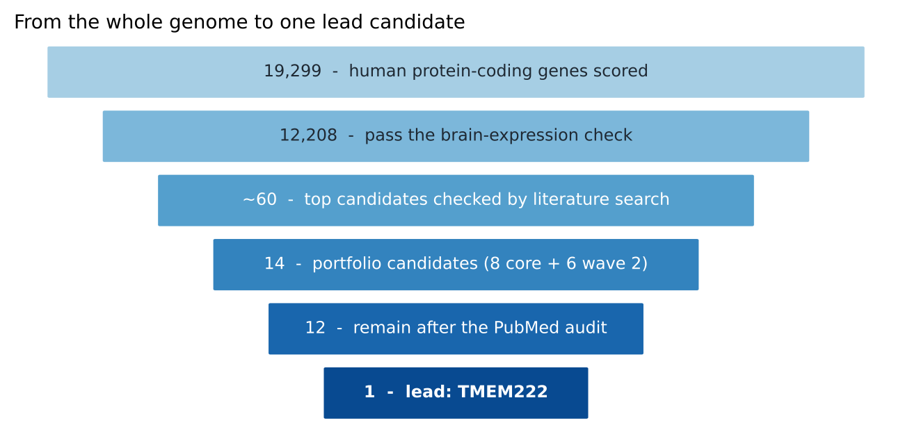
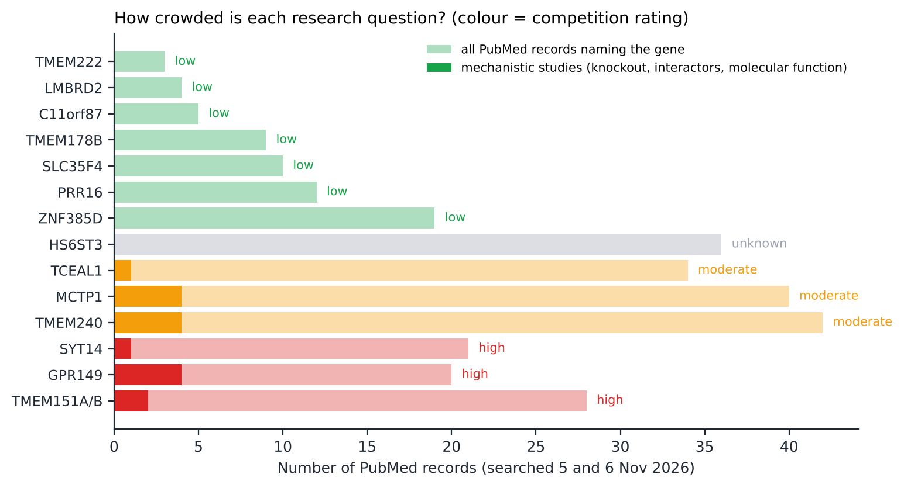
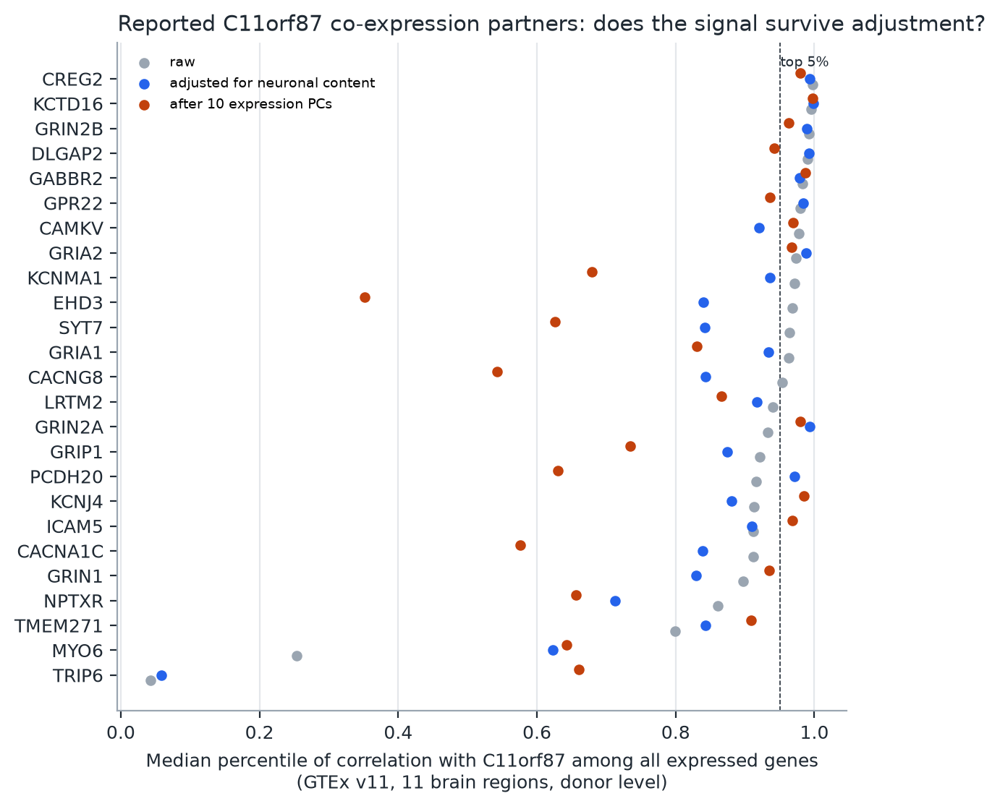
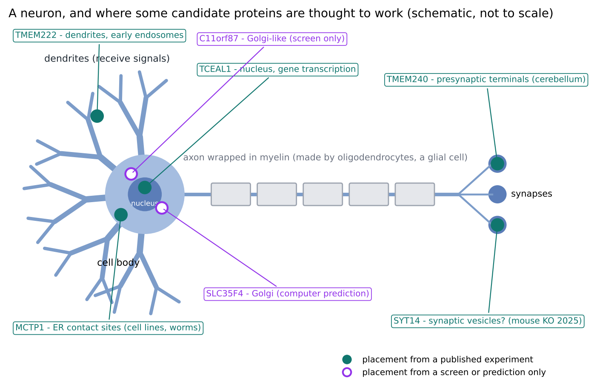
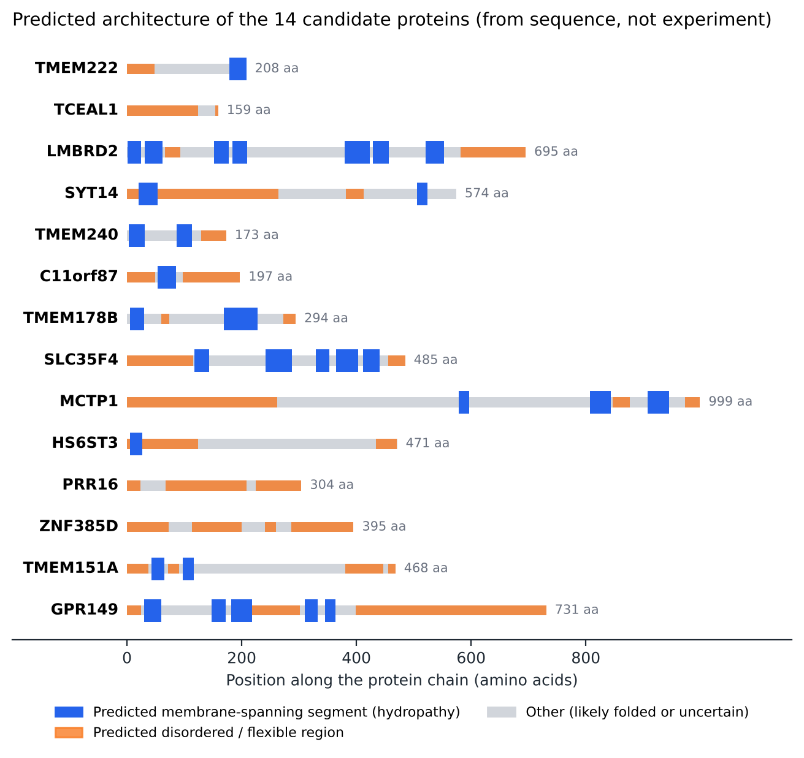
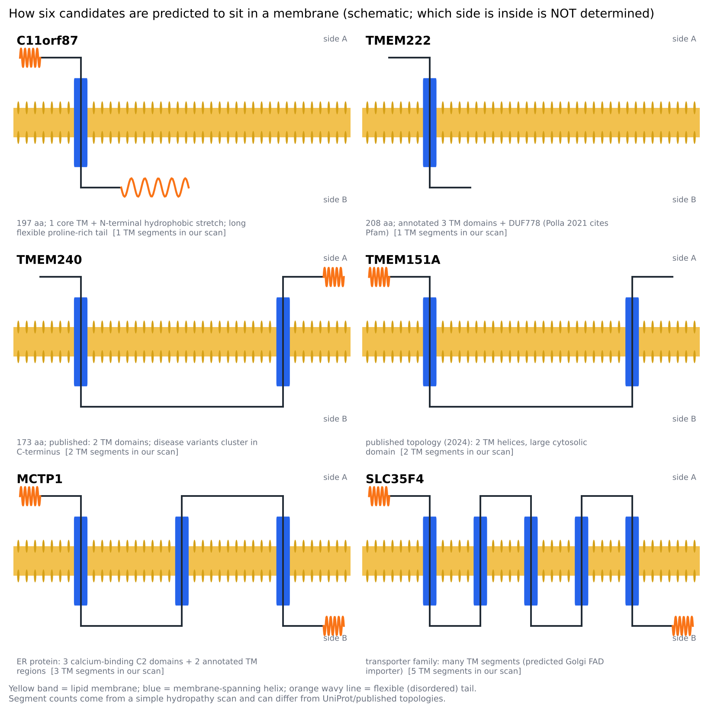

In one paragraph
What this is
Scientists have studied some human proteins intensely and barely touched others. We built a pipeline to find proteins that are (1) used mainly in the brain, (2) already linked to a disease, and yet (3) almost unstudied. We then checked every candidate against the world's medical literature (PubMed, searched 5 and re-run 6 November 2026 — identical results, no new papers). One protein, TMEM222, is the strongest first bet.
genes scored
Every human protein-coding gene, on neuronal specificity, disease evidence and how little is known.
candidates
8 core + 6 second-wave proteins, across six disease areas.
lead
TMEM222 — disease-linked, barely studied, and the key experiment is undone.
Method
How the screen worked
We started with every human gene and narrowed down in steps, like panning for gold. At each step we asked three plain questions: is it a brain specialist, is it tied to illness, and is it still a mystery?

Not every clue is equally strong. We kept the evidence types apart and never let a weak clue stand in for a strong one.

Results
The 14 candidates
Working hypotheses only. "Competition" is how crowded the research question is, from a PubMed audit of all aliases. Use the filters to focus.
| Gene | Track | Disease link (evidence type) | Working hypothesis (untested) | Competition |
|---|---|---|---|---|
| C11orf87 Core 8 |
Discovery (unstudied protein) | psychiatric (reported schizophrenia locus; unverified - do not call it a… | C11orf87 is a Golgi/post-Golgi membrane protein required for efficient surface delivery of a subset of neuronal membrane proteins. Our replication does not support CACNG8/AMPA… | low |
| TMEM151A backup Core 8 |
Mendelian mechanism (competition) | movement disorder (paroxysmal kinesigenic dyskinesia) | TMEM151A acts in both neurons and oligodendrocytes, and PKD reflects the combined loss in a circuit (e.g. impaired axonal conduction plus neuronal excitability) rather than a… | high |
| TMEM240 Core 8 |
Mendelian mechanism (follow-up) | cerebellar ataxia (SCA21) with cognitive impairment | Follow-up to Seki 2018: the normal (loss-of-function) role of TMEM240 at cerebellar afferent terminals depends on C-terminal interactions; testing knockout plus WT/mutant… | moderate |
| SYT14 Core 8 |
Mendelian mechanism | autosomal recessive cerebellar ataxia (SCAR11); neurodevelopment | SYT14 supports a Ca2+-independent membrane-fusion or membrane-retrieval step in Purkinje-cell somatodendritic compartments (not fast synaptic release), and its loss impairs… | high |
| TMEM222 lead Core 8 |
Mendelian mechanism | neurodevelopmental disorder / intellectual disability | TMEM222 is required for endosomal sorting/recycling of synaptic membrane proteins during synapse maturation; loss shifts cargo from recycling to degradation. | low |
| LMBRD2 Core 8 |
Mendelian mechanism | neurodevelopmental disorder with epilepsy/microcephaly | LMBRD2 is a negative regulator of neuronal GPCR signalling (beyond beta2AR); recurrent de novo missense variants act as dominant gain- or loss-of-regulation, altering… | low |
| HS6ST3 Core 8 |
Locus - needs gene assignment | depression / mood (common-variant) | Mood-associated variants reduce neuronal HS6ST3 expression, lowering 6-O-sulfation of synaptic heparan sulfate proteoglycans and weakening HS-dependent synaptic organiser binding. | unknown |
| GPR149 backup Core 8 |
Locus - needs gene assignment | migraine (common-variant); orphan receptor | GPR149 signalling in hypothalamic/forebrain neurons modulates migraine susceptibility; the migraine locus acts via GPR149 expression. | high |
| PRR16 Wave 2 |
Locus - needs gene assignment | anxiety / depression (common-variant) | Mood/anxiety risk variants lower neuronal PRR16 expression, and PRR16 controls neuronal mitochondrial mass/cell growth in deep-layer projection neurons. | unknown |
| ZNF385D Wave 2 |
Locus - needs gene assignment | migraine; reading/language (literature) | ZNF385D is a neuronal RNA-binding protein whose reduced expression alters cortical excitability, linking migraine and language-related loci. | unknown |
| TMEM178B Wave 2 |
Discovery (unstudied protein) | none yet (LoF-constrained) | TMEM178B, like its paralog, regulates ER/store-operated calcium handling, here in cortical projection neurons. | low |
| SLC35F4 Wave 2 |
Discovery (unstudied protein) | none yet (cerebellum-enriched) | SLC35F4 imports FAD into the neuronal Golgi to support oxidative folding of secreted/surface neuronal proteins; loss reduces surface delivery of disulfide-rich cargo. | moderate |
| MCTP1 Wave 2 |
Discovery (conserved mechanism test) | bipolar disorder (literature association) | MCTP1 is required for presynaptic homeostatic plasticity in mammalian hippocampal neurons, as its fly homolog is. | moderate |
| TCEAL1 Wave 2 |
Mendelian mechanism | X-linked neurodevelopmental disorder | TCEAL1 is a transcriptional regulator whose loss alters neuronal maturation gene programmes. | moderate |

Front-runner
TMEM222
In 2021, doctors found that children who inherit two broken copies of the TMEM222 gene have a neurodevelopmental disorder — intellectual disability, speech delay, and in some cases seizures. That is strong, patient-based evidence that the protein matters for the brain. Yet since that single discovery paper, essentially no one has studied what the protein does. That combination is exactly what this project was built to find.
Hypothesis: TMEM222 helps neurons recycle their surface receptors — the antennae that catch incoming signals. If it fails, those receptors may be sent for destruction instead of reused.
One catch we flagged: the antibody used to detect the protein in the original study was never fully proven specific. So the first lab step must be a detection tool proven to see TMEM222 and nothing else (a knockout-validated antibody or an endogenous tag).
The starting candidate
C11orf87 — and an honest negative result
The project began with C11orf87, a protein found almost only in neurons. An earlier idea linked it to a specific receptor partner (CACNG8 / TARP-γ8). When we re-checked that link, it dissolved: the two only looked connected because they live in the same cells, not because they work together.
In GTEx bulk data the correlation falls from ρ 0.89 to 0.01 after adjusting for cell composition; in single-nucleus data it is null within neuron types. This stopped us chasing a false lead. C11orf87 is still an interesting mystery protein; its one firm clue (a 2012 secretion screen) needs its original data re-checked, which we have not yet been able to reach.

Interactive
3D structures (predicted)
Pick a protein. Drag to rotate, scroll or pinch to zoom, right-drag (or two-finger drag) to move it. These are AlphaFold predictions, not experimentally solved structures. Colour shows how confident the prediction is: blue parts are probably shaped like this; orange parts are floppy or uncertain.
Structures: AlphaFold DB (Jumper et al., Nature 2021; Varadi et al., Nucleic Acids Res 2024), CC BY 4.0. Viewer: 3Dmol.js (Rego & Koes, Bioinformatics 2015), BSD licence. Low-confidence regions should not be read as real shapes; many of these proteins are predicted to be partly disordered.
Illustrated
The biology
These are schematic drawings made for this project. Filled markers show placements supported by a published experiment; open markers show placements from a screen or prediction only. The architecture panels are drawn from our own sequence predictions (a hydropathy scan for membrane-spanning segments; metapredict for disorder). These drawings are not structures; the interactive 3D section above shows AlphaFold predictions, which are also not experimental structures.




Honesty
What is still missing
- Simpson 2012 per-gene RNAi data for C11orf87 (not in PubMed Central; supplementary spreadsheets needed).
- Trubetskoy 2022 prioritised-gene tables (not in the accessible text).
- Locus-to-gene / brain eQTL evidence for the GWAS candidates (HS6ST3, PRR16, ZNF385D, GPR149).
- Grants, theses and conference abstracts — a TMEM222 competition check — which PubMed does not index.
New
Protein library
All 100 proteins our screen has put through a literature check (60 audited, 27 added in wave 3, and 13 from a glial screen), each with its PubMed papers labelled by evidence type (experiment, human genetics, genetic association, screen, prediction, review or incidental mention) and a plain status: needs a mechanistic study, partly studied, being studied by others, or already studied elsewhere.
New
Rapid reviews
Three small literature reviews and one gene audit tested our own assumptions: how "unknown" is defined, which cell types carry brain-disorder risk, whether small nuclear RNA genes are an open gap, and how studied schizophrenia rare-variant genes are. Result: our unstudied score needs rebuilding, the neuron-only filter should depend on the disease, and RNU4-2 and RNU2-2 are already heavily studied. PubMed only, one AI reviewer, not full systematic reviews.
Read more